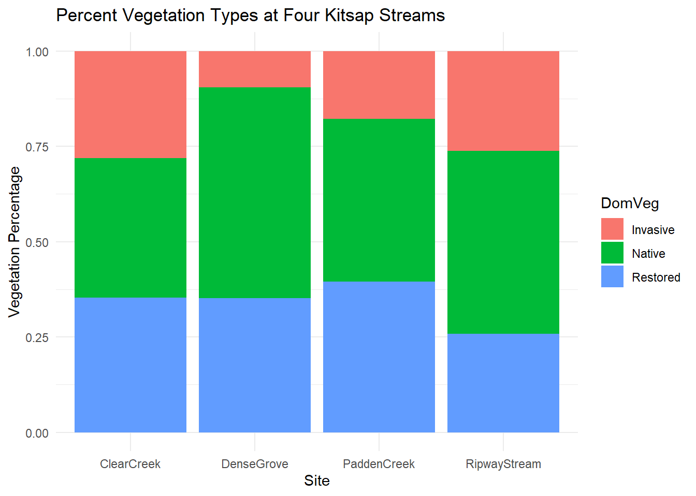
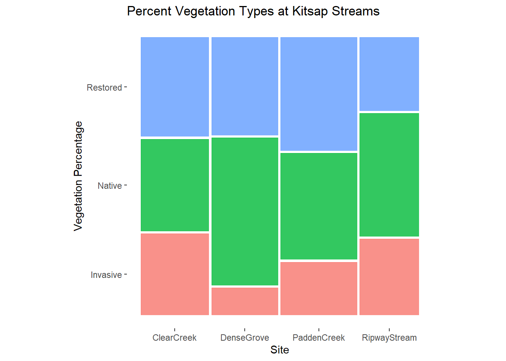
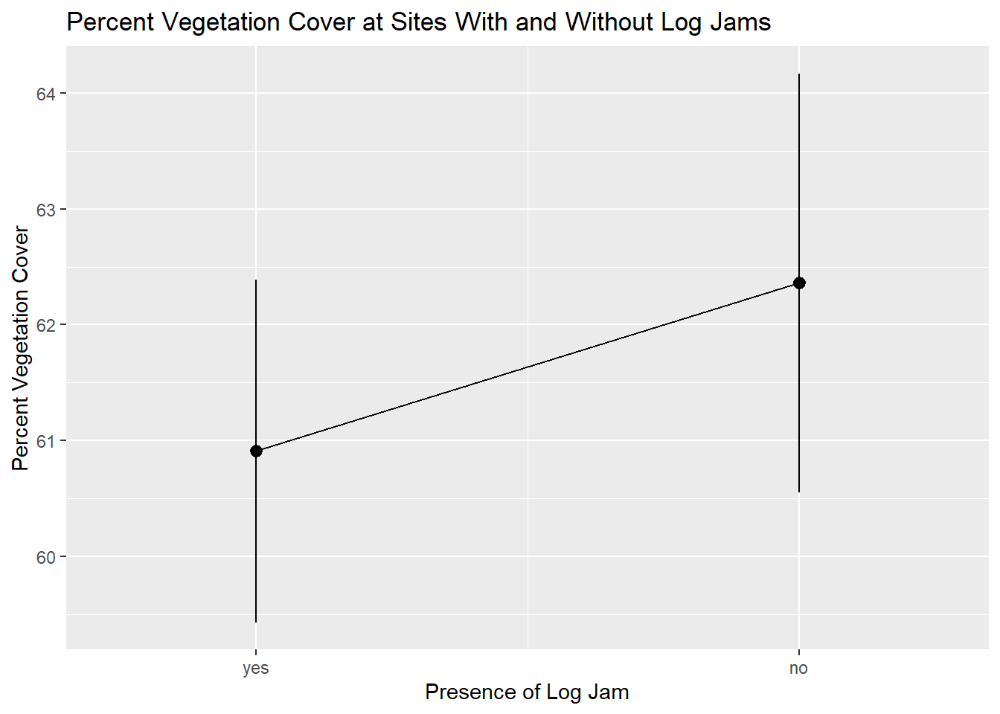
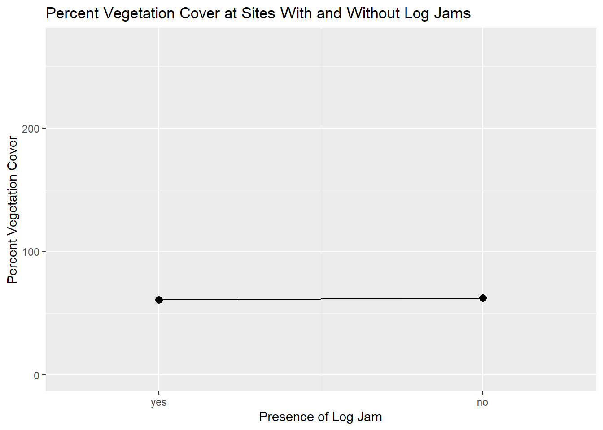
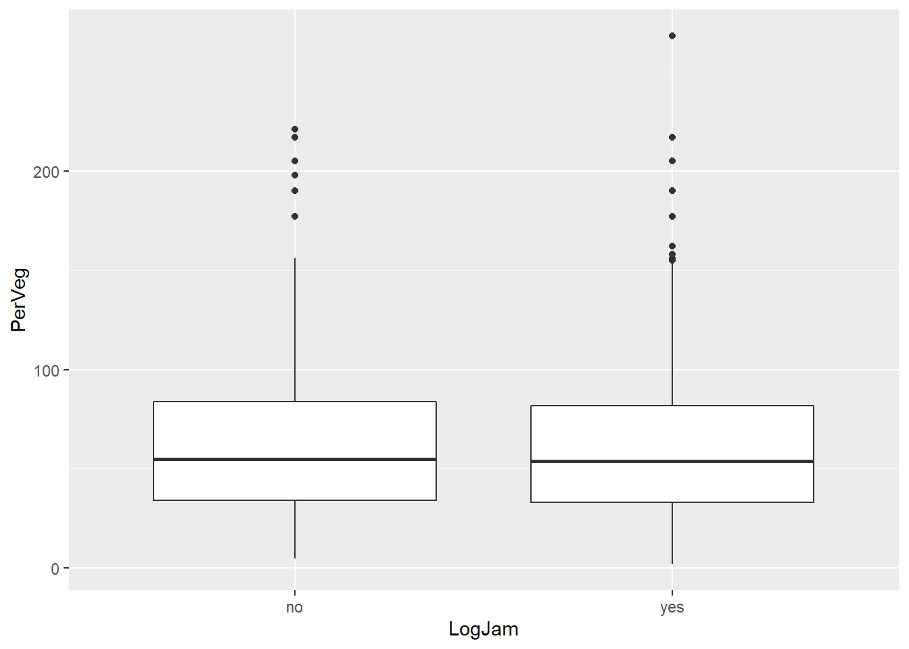
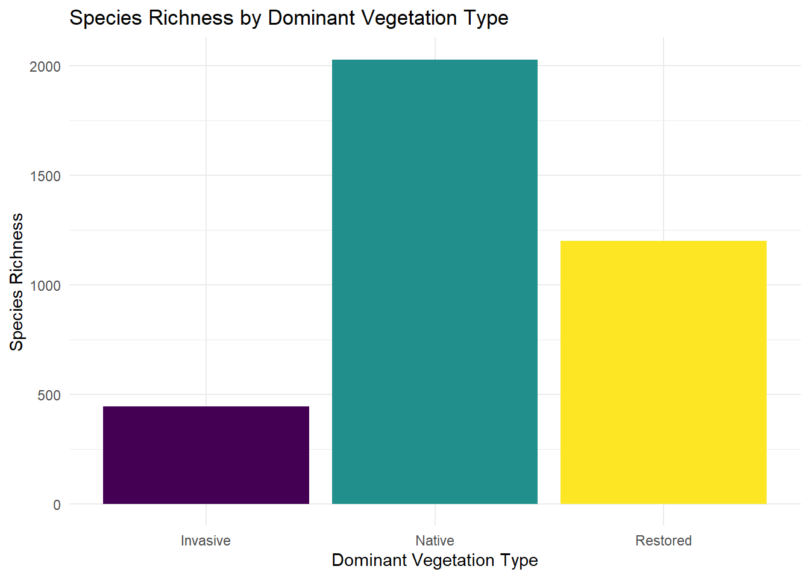
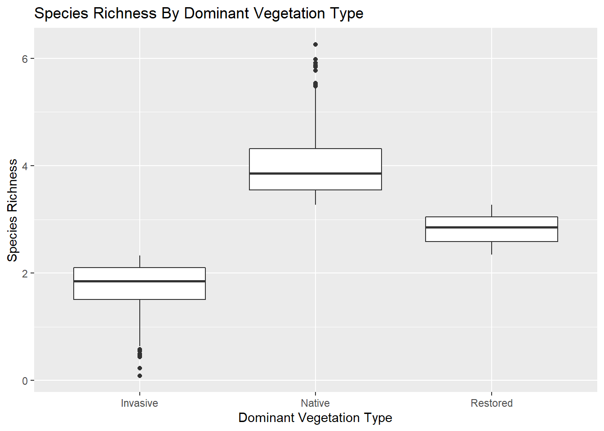
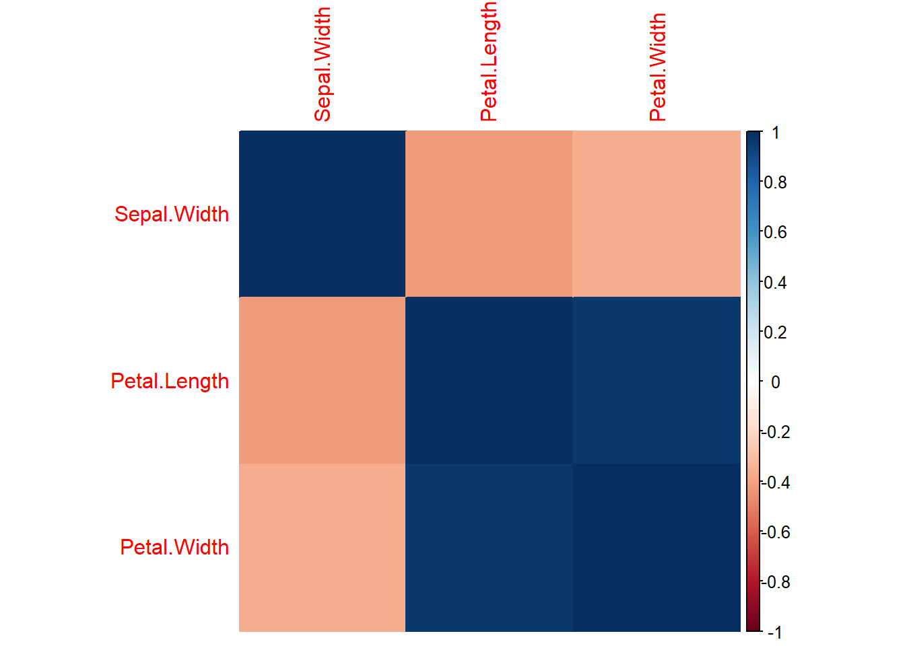
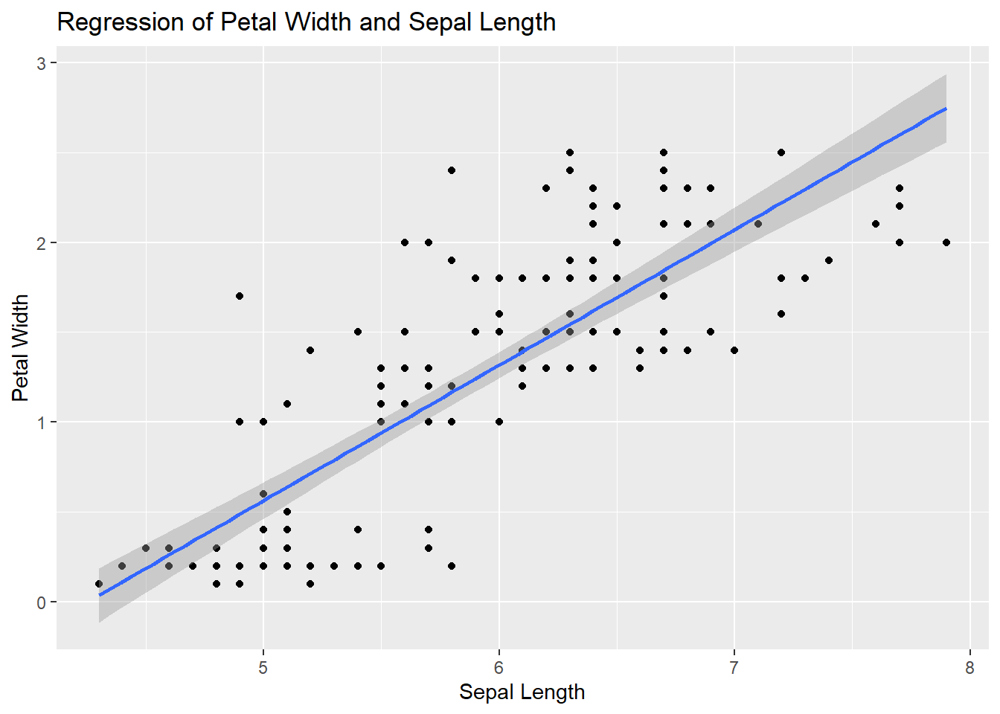

# packing libraries for a fun trip
# tidyverse contains dplyr and ggplot2 a well as many other packages I like to use, so I install the whole thing. Controversial, but its never slowed me down.
pack_list <- c("tidyverse", "DT", "readr", "ggmosaic", "GGally", "stats", "corrplot", "knitr", "RColorBrewer", "viridis")
# if the pacman package is not already installed, install it
if(!require("pacman")) {install.packages("pacman")}
# use the p_load function to check if packages in the list are installed and if any are not, install the ones that are missing
pacman::p_load(pack_list, character.only = TRUE)
# need this to use the pipe operator
# Yes, R has a new base pipe |> but I have not begun using it yet and I am not certain yet how well it plays well with all my favorite functions
library(magrittr)
# load ggplot2 because I don't like to label all of the internal functions necessary to create plots with ggplot2:: ; it makes my code ugly
library(ggplot2)Statistical Test Visualization with ggplot2
Introduction
This learning module will focus on the use of the ggplot2 library with the help of a couple of its subsidiaries to create beautiful visualizations of your statistic test results. I will employ tidy syntax throughout the module, so if you are unfamiliar with the use of dplyr and the magrittr pipe, here are some resources that can help:
Data Wrangling with dplyr and tidyr Cheat sheet
I will aim to be as transparent as possible with the code I demonstrate here, by utilizing three strategies that help viewers of my code understand what I am doing and why:
I’ll clarify my arguments within the code, although the code will run just fine without the extra statements. For example, I’ll type
ggplot(data = mydata)rather thanggplot(mydata)I’ll use commented out annotations within the code chunks to explain in plain English what each line is doing. I’ll load my libraries in the following code chunk and use it as example of what I mean:
- Finally, I will specify the package for functions that I use in my code using the double colons
::, as inreadr::read_csv(), so that you know where to find these functions later.
Something else I want to add here for your benefit as potentially growing R users: This html document was created using an Rmarkdown script. I’ve been using Rmarkdown to create nice looking html documents for the better part of 2 years and I love it. While I was creating this module, however, a new publishing tool called Quarto became available via Rstudio; you will see it as a native document type under File >> New File as soon as you update your Rstudio version. QMD files will operate a lot like RMD files and can be used along with the rest of the Quarto tools to do all kinds of things like create books or websites. Check it out!
Exercises
I’ll provide some suggested activities and explorations to help you gain the most from this module. Spend as long as you feel is helpful and interesting on these.
How is the method I used to load packages different from methods you might have used or seen previously? How might using this method change the way you have to code, and what are the benefits and drawbacks?
What is the magrittr pipe and how is it different from the new base R pipe?
What other R cheat sheets are out there? Find 3.
ggplot (now ggplot2)
In this learning module we will introduce basics of using the ggplot2 package and take a tour of a handful of useful plot types you will want to know how to create in order to represent statistical test results.
ggplot2 is a versatile and (usually) easy to use package for creating beautiful graphics from data in R. ggplot2 takes data in the form of a data frame and creates a ggplot object, to which you can then add plot aesthetics. It is possible to make all kinds of custom adjustments in ggplot2, and to learn how to tweak your plots to suit your preferences I highly recommend checking out the ggplot2 cheat sheet. Do bear in mind when using ggplot2 that there is a caveat to the simplicity of using such a streamlined set of functions to make otherwise complicated figures.ggplot2 WILL make assumptions about things like the axis scales, inclusion of a legend, and colors to use, if you let it. These features are almost infinitely customize-able but once you start looking for ways to tweak your plots, you will find it helpful to know your way around help forums such as the ever-popular stack overflow, and the various R community resources.
I highly encourage anyone who will be creating plots to visualize data to visit The ggplot2 Book and The R Graphics Cookbook for oodles of inspiration and advice.
The steps that go into creating a ggplot graphic can be broadly broken down into:
- creating the ggplot object and add aesthetics: this means declaring your variables of interest
ggplot(data = , mapping = aes(x = , y = ))
- add plot geom layers to your graphic
geom_scatterplot()
- customize your plot by modifying themes, axes and labels
theme_minimal()
labs(x = " ", y = " ", title = " ")
First Step
Read in Kitsap Streams data and look at the structure
# read the csv containing Kitsap Streams data
# readr::read_csv outputs a tibble. utils;:read.csv outputs a data frame. There are differences in the ways these packages make assumptions about your data but they are irrelevant to us here.
kitsap <- readr::read_csv("KitsapStreams.csv")
# look at the data
utils::str(kitsap)spec_tbl_df [1,186 × 8] (S3: spec_tbl_df/tbl_df/tbl/data.frame)
$ RiverMeter: num [1:1186] 1 2 3 4 5 7 8 9 10 11 ...
$ DomVeg : chr [1:1186] "Native" "Restored" "Native" "Invasive" ...
$ Site : chr [1:1186] "ClearCreek" "ClearCreek" "ClearCreek" "ClearCreek" ...
$ PerVeg : num [1:1186] 12 217 139 36 6 51 91 115 21 42 ...
$ SpRich : num [1:1186] 4.16 2.5 3.55 2.24 2.46 2.71 3.95 1.87 2.92 4.32 ...
$ FloRes : num [1:1186] 4.28 2.59 3.8 2.01 2.18 1.08 3.74 1.67 2.68 3.01 ...
$ BevDam : chr [1:1186] "no" "yes" "no" "no" ...
$ LogJam : chr [1:1186] "no" "no" "no" "no" ...
- attr(*, "spec")=
.. cols(
.. RiverMeter = col_double(),
.. DomVeg = col_character(),
.. Site = col_character(),
.. PerVeg = col_double(),
.. SpRich = col_double(),
.. FloRes = col_double(),
.. BevDam = col_character(),
.. LogJam = col_character()
.. )
- attr(*, "problems")=<externalptr> The variables in the data don’t require much explanation:
DomVeg = whether the vegetation was invasive, native, or restored
SpRich = number of plant species counted in a 1 m X 1m quadrat replicated three times
PerVeg = percent vegetative cover
BevDam = presence of beaver dam
LogJam = presence of natural log jams
This dataset is useful for demonstrating a variety of common statistical tests that you might want to perform. Where these data do not have the characteristics I need to demonstrate a plot, I will instead use the R built in iris dataset, which contains measurements of width and length for petals and sepals for three different species of iris.
# look at the structure if the iris data
str(iris)'data.frame': 150 obs. of 5 variables:
$ Sepal.Length: num 5.1 4.9 4.7 4.6 5 5.4 4.6 5 4.4 4.9 ...
$ Sepal.Width : num 3.5 3 3.2 3.1 3.6 3.9 3.4 3.4 2.9 3.1 ...
$ Petal.Length: num 1.4 1.4 1.3 1.5 1.4 1.7 1.4 1.5 1.4 1.5 ...
$ Petal.Width : num 0.2 0.2 0.2 0.2 0.2 0.4 0.3 0.2 0.2 0.1 ...
$ Species : Factor w/ 3 levels "setosa","versicolor",..: 1 1 1 1 1 1 1 1 1 1 ...These variables, I believe, ought to be self-explanatory.
Nice Tables
It is a nice feature of markdown that it outputs html documents which can be made interactive. The code below will print an interactive table of your data. While it is often not a good idea to burden your audience by printing your entire data to your output, there will be times where you might want to do this, and in those times, it might as well look good.
# Make a pretty table of the kitsap data
DT::datatable(data = kitsap)Exercise
- Open up an R script and make sure to load the ggplot2 library and the Kitsap Streams data. Run the code below.
ggplot(data = kitsap, mapping = aes(DomVeg, SpRich)) + geom_bar()
Did the code run? Can you figure out why not? Can you figure out how to fix it? This is a bit tricky so don’t hesitate to search the internet for explanations and solutions.
- Play with 3 different combinations of xy variables and geoms. When you go to add the geom, pause at
geom_and take a look at the list that pops up. Explore. Can you predict what plot types will work with which combinations of variables?
Chi Square Test
Chi square tests compare expected vs observed outcomes in a population exposed to different treatments. Mosaic plots are a frequent go-to for displaying data being tested using chi square.
I’ll demonstrate two ways of building mosaic plots in ggplot2. They are both simple to use, and which one appeals to you will depend on your personal preferences for things like purpose-built vs versatile but possibly more code-heavy tools.
Mosaic Plots
Take note of the differences between these plots. Which one do you prefer, visually? Which method suits you best?
With geom_bar()
To create a plot of the proportions of various vegetation types at each site, ggplot will need something like an index column so that it has values to add to each of the categories in the stacked bar. The kitsap data has the RiverMeter column, which suits our purposes, but you could easily create a column to meet your needs with the following code:
as.numeric(rownames(your_data_frame))
# create the ggplot object with variables of interest
ggplot2::ggplot(kitsap, mapping = aes(fill = DomVeg, y = RiverMeter, x = Site)) +
# add position and stat arguments to geom_bar
geom_bar(position = "fill", stat = "identity") +
# make the labels helpful
ggplot2::labs(y = "Vegetation Percentage", title = "Percent Vegetation Types at Four Kitsap Streams") +
# theme_minimal removes the dark background and extra black lines which I find to be pleasantly simplifying for this type of plot
ggplot2::theme_minimal()
With ggmosaic
The ggmosaic library contains purpose built tools for building very slick looking mosaic plots with minimal coding. Beware of losing touch with the elements of your data that are actually going into this plot, or what assumptions the ggmosaic package might be making about your data.
Uses the ggplot add-on package ggmosaic. For information visit the CRAN page for the ggmosaic package
# for reasons I do not yet understand, this code does not run unless I load the whole library
library(ggmosaic)
# create a ggplot object from the kitsap data and name it kitmos. note that the + operator is used to add layers to the ggplot object
kit_mos <- ggplot2::ggplot(data = kitsap) +
# add the geom object for the mosaic plot. note this is a separate package!
ggmosaic::geom_mosaic(aes(x = product(Site), fill = DomVeg)) +
# pick a nice pre-packaged theme that will refine the appearance of our plot
ggmosaic::theme_mosaic() +
# refine the axis labels and add a title
ggplot2::labs(y = "Vegetation Percentage", title = "Percent Vegetation Types at Kitsap Streams") +
# remove legend; ggplot2 adds it automatically when we add color using fill =
ggplot2::theme(legend.position = "none")
kit_mos
It couldn’t be simpler. If you choose to use this method to create your mosaic plots, don’t lose sight of what these convenient functions obscure about how they use your data, lest you create a misleading label.
Exercise:
See if you can add
scale_y_continuous()with arguments forbreaks = c()andlabels = c()to the first mosaic plot to make the y axis look like the second plot. Remove the legend using+ theme()with the appropriate argument.Consider what you like and don’t like about each of these plots. Can you find methods in
ggplot2to make your ideal mosaic plot?
T-tests
Displaying the results of a t-test requires highlighting the difference in means between two groups. You will want to display upper and lower quartiles in order to disclose what could otherwise be misleading differences in the range of the data. Outliers can be important too, remember to pay special attention to the Y axis range!
First, I’ll run the Welch’s two-sample t-test, so I know what to highlight in my plot.
#t.test from base R
t.test(PerVeg ~ LogJam, data = kitsap)
Welch Two Sample t-test
data: PerVeg by LogJam
t = 0.62123, df = 1000.5, p-value = 0.5346
alternative hypothesis: true difference in means between group no and group yes is not equal to 0
95 percent confidence interval:
-3.133098 6.035751
sample estimates:
mean in group no mean in group yes
62.35991 60.90859 This t-test shows no significant differences in percent vegetation between the two LogJam groups. Lets make sure to build a graphic that shows that to the audience.
Line Graphs
Making a line graph with a discrete x variable in ggplot2 required a bit of wrangling. The problem is that the geom_pointrange() function can take a numeric or string vector for the x variable, but creating a line between the two means becomes difficult unless the x variable is numeric. I get around that here by converting the binary LogJam variable from yes/no to 0/1, then change the labels back to yes/no once I’ve built the plot.
# Create a numeric binary variable for LogJam
kitsap_line <- kitsap %>% dplyr::mutate(LogJam_num = dplyr::if_else(LogJam == "yes", 1, 2))
# vector of labels to later restore x axis tick labels
labels = c("yes", "no")
# data frame to feed x and y values to geom_line()
mean_veg <- kitsap_line %>% dplyr::group_by(LogJam_num) %>%
dplyr::summarise(Mean = mean(PerVeg))
# build the ggplot object
kit_line <- ggplot2::ggplot(kitsap_line) +
# geom_pointrange layer adds means with error bars
ggplot2::geom_pointrange(
# identify variables of interest
mapping = aes(x = LogJam_num, y = PerVeg),
# statistical transformation to use on this layer
stat = "summary",
# y upper and lower limits
fun.ymin = min,
fun.ymax = max,
# function to generate points should be means
fun.y = mean
) +
# add a layer for the line connecting the points
ggplot2::geom_line(aes(x = LogJam_num, y = Mean), data = mean_veg) +
# customize x axis
ggplot2::scale_x_continuous(
# only want two ticks, no intermediates
breaks = c(1, 2),
# add space on the edges of the x axis so that the ticks are more centered in the plot
expand = expansion(c(.35, .35)),
# revert labels back to yes/no from 1/2
labels = c("yes", "no")
) +
# add nice axis and main titles
ggplot2::labs(x = "Presence of Log Jam", y = "Percent Vegetation Cover", title = "Percent Vegetation Cover at Sites With and Without Log Jams")
# call the plot
kit_line
But, I have a problem with this. In this plot, it looks like groups have a real difference. That is because the actual range of the PerVeg variable is a lot larger than the range displayed on this graph; it is important to always pay attention to the assumptions that ggplot will make about how you want your data displayed, and I think that scales are an area of special concern since they can distort your findings. I’m going to create a second plot, altering the y axis so that it represents the full range of the data.
# create a variable to contain the y axis (PerVeg) maximum
ymax <- max(kitsap_line$PerVeg)
# same plot as before; this is why naming your ggplot objects can be so handy
kit_line_rangeexpand <- kit_line +
# alter the scale of the y axis, setting the max to the upper limit of the PerVeg variable
ggplot2::scale_y_continuous(limits = c(0, ymax))
# call the plot
kit_line_rangeexpand
Now it is obvious that the difference in the means is not so great relative to the range of the two groups.
BoxPlots for T-tests
The box plot may be a more effective way to display this particular test result.
# create the ggplot object and identify variables of interest
ggplot2::ggplot(data = kitsap, mapping = aes(x = LogJam, y = PerVeg)) +
# add box plot geom
ggplot2::geom_boxplot()
Exercise
Fix the axis labels on the last plot.
When I used both the
breaks()andexpand()arguments in thescale_x_continuous()layer of my line graph, I actually wrote more code than was necessary. Can you figure out how to make fewer arguments and still get the x axis to look the way you want it to?
ANOVA
When displaying the results of an analysis of variance, you will likely want to display more than two values for your categorical variable on your x axis. This is not much different than displaying the results of a t-test, but with the extra x axis values, bar plots become a more attractive option.
Bar Plots
Useful for displaying counts or mean values across a categorical variable
# create the ggplot object, specify to add color by the x variable
ggplot2::ggplot(data = kitsap, mapping = aes(x = DomVeg, y = SpRich, fill = DomVeg)) +
# stat = summary to display means
ggplot2::geom_bar(stat = "identity") +
# change the colors; default is for continuous data so declare discrete = TRUE
viridis::scale_fill_viridis(discrete = TRUE) +
# add nice axis labels
ggplot2::labs(x = "Dominant Vegetation Type", y = "Species Richness", title = "Species Richness by Dominant Vegetation Type") +
# get rid of the dark background
theme_minimal() +
# we don't need a legend for this type of plot, but ggplot 2 will add one when we specify fill = DomVeg
ggplot2::theme(legend.position = "none")
Box Plots
Another great way to display the results of your ANOVA.
ggplot2::ggplot(data = kitsap, mapping = aes(x = DomVeg, y = SpRich)) +
ggplot2::geom_boxplot() +
ggplot2::labs(x = "Dominant Vegetation Type", y = "Species Richness", title = "Species Richness By Dominant Vegetation Type")
Exercise
Do you like the gray background in the box plot? Get rid of it.
What do you think of the color palette for the bar plot? Change it. Explore Chapter 12 of the R Graphics Cookbook. Play.
Take the line
theme(legend.position = "none")and move it to the very end of the code for building the plot. What happens? Why?
Correlations
Correlations might be a primary finding of your work or they might be part of your initial data exploration. Depending on your intentions and the nature of your data, you will
Tables
There are only three rows of numeric data to test correlations. With this small number of variables, we can reasonably print a table of correlations to our output.
# generate a correlation matrix of the numeric variables of the kitsap data
kit_cor <- stats::cor(kitsap[ ,4:6])
# a nice looking table to print in our output
knitr::kable(kit_cor)| PerVeg | SpRich | FloRes | |
|---|---|---|---|
| PerVeg | 1.0000000 | -0.0166539 | 0.0018838 |
| SpRich | -0.0166539 | 1.0000000 | 0.7338875 |
| FloRes | 0.0018838 | 0.7338875 | 1.0000000 |
Heatmaps
Heat maps can be helpful if you are trying to determine the degree or variety of correlations present in your data. This becomes more helpful as your data become larger and I find it works best to display 10-50 rows per heat map.
I am switching to using the built-in iris data here so that you can see how the color temperature works to display different correlations.
# heat map of correlations. use only numeric variables
iris_cor <- stats::cor(iris[ ,2:4])
# correlation heat map using corrplot
corrplot::corrplot(iris_cor, method = "color")
Exercise:
There’s another function that will give you correlations in addition to a lot of other output. It can be helpful if you are doing exploratory data analysis on a dataset with a few variables of interest where you are curious about the relationships between all or some of the variables. Run the ggpairs() function from the GGally package. Break up the data if you want to by using square brackets to cherry pick what columns you want to compare, as in kitsap[ ,2:8]. See what you can learn from the results.
Get started with this line of code: GGally::ggpairs(kitsap)
Regressions
The kitsap streams data does not have great variables for demonstrating a regression so I will default to using the built in iris data.
# create ggplot object and identify variables of interest
ggplot2::ggplot(data = iris, mapping = aes(x = Sepal.Length, y = Petal.Width)) +
# geom_point gives a scatter plot
ggplot2::geom_point() +
# add a trend line layer with geom_smooth and use method lm for linear regression
ggplot2::geom_smooth(method = "lm") +
# nice labels
ggplot2::labs(x = "Sepal Length", y = "Petal Width", title = "Regression of Petal Width and Sepal Length")
Lovely Regression!
Exercise
Add color = Species to the aes() arguments. What happens? What do you think now about the relationship between petal width and sepal length for iris?